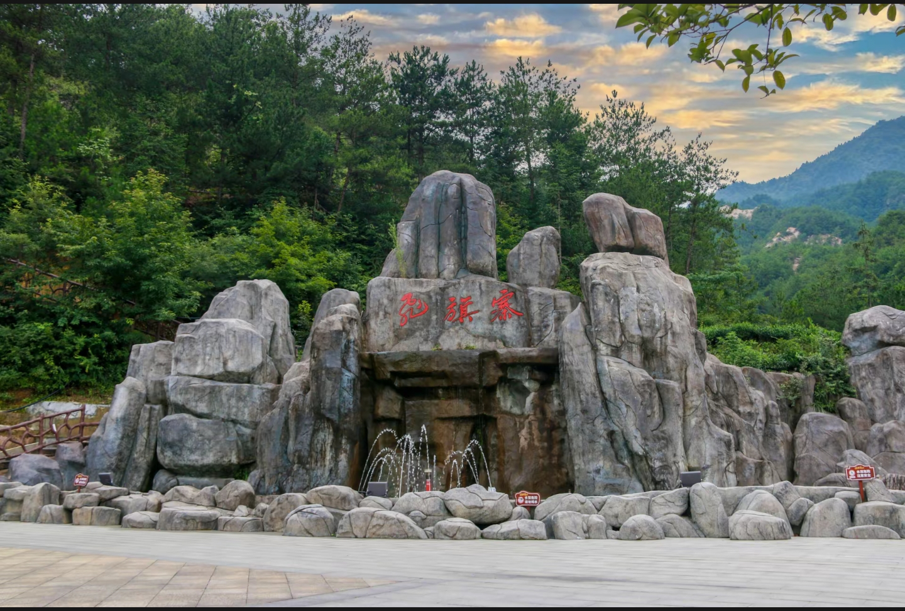

飞旗寨位于安徽省安庆市岳西县莲云乡，主峰海拔 1064米，东南两面悬崖峭壁，西面襟接桃园寨，北面山峦绵延。景区规划面积 5000亩，属于典型的花岗岩地貌，距岳西县城仅十来分钟车程。
现存古寨始建于 明崇祯十五年（1642年），安庆抚臣史可法曾率部在此驻守抗敌，"飞旗寨"因战旗飞扬而得名，已有近 380年 历史。
这里集 奇峰、怪石、悬崖、古寨 于一体，四季景致各异——春赏杜鹃映山红，夏避酷暑享清凉，秋观层林尽染，冬览雪覆苍山。登寨可俯瞰大别山层峦叠嶂，感受「一览众山小」的壮阔。
我们的度假酒店坐落于飞旗寨景区腹地，融合 红色文化 与 自然生态，为您提供远离喧嚣、回归自然的极致红色旅居体验。

融合红色文化与自然生态，为您打造难忘的大别山红色旅居体验
推窗即见大别山层峦叠嶂，每间客房均设全景落地窗，晨观日出云海，夜赏星空银河，尽享山居诗意。
品尝地道岳西农家菜，以高山有机食材烹制——岳西翠兰茶、高山茭白、土鸡汤、野生山珍，舌尖上的大别山。
探访380年古寨遗址，体验玻璃栈道的惊险刺激，登1064米主峰俯瞰群山，感受历史与自然的交融。
探访红二十八军旧址、大别山烈士陵园，走进鄂豫皖革命根据地，在绿水青山间追忆峥嵘岁月。
「建县不到百年，半部都是红色史诗」—— 走进大别山革命老区
岳西县地处大别山腹地，是著名的 革命老区，属于 鄂豫皖革命根据地 和 大别山革命根据地 的核心区域。全县共有革命遗址 336处，占安徽省总数的十分之一，现有红色教育基地 16个。
位于鹞落坪国家级自然保护区内，1935-1937年红二十八军坚持鄂豫皖三年游击战争的大本营，见证了艰苦卓绝的革命岁月。
位于岳西县城南虎形山，1959年兴建，安徽省爱国主义教育基地，国家红色旅游精品线路重要景点，安葬着数千名为革命献身的先烈。
中共安徽省委首任书记王步文的出生地，是安徽省重要的红色教育基地，承载着早期共产党人的初心与使命。
国家级自然保护区，央视《重走抗战路》栏目组曾赴此探访，是"红色+生态"融合发展的典范，绿水青山间铭刻着红色记忆。
欢迎咨询预订，期待您在飞旗寨度过美好时光
安徽省安庆市岳西县莲云乡飞旗寨景区
敬请期待
welcome@feiqizhai.com